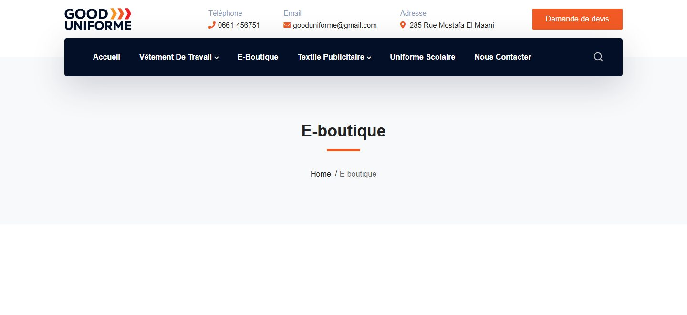
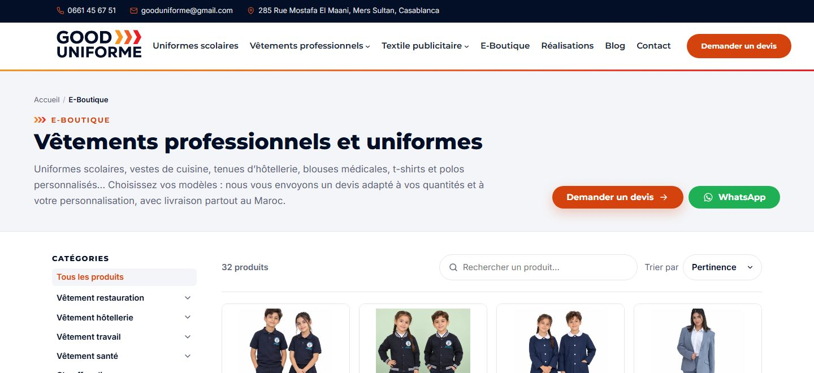
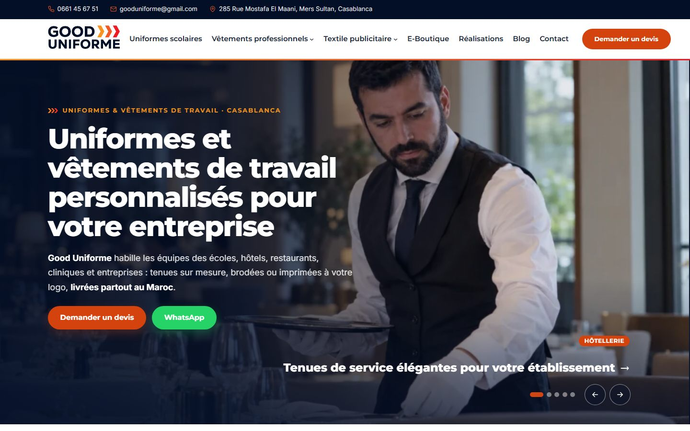
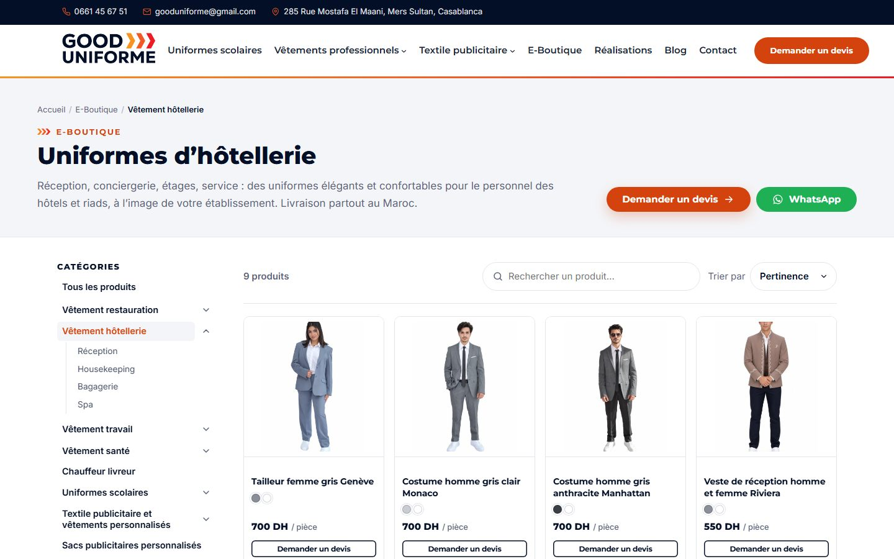
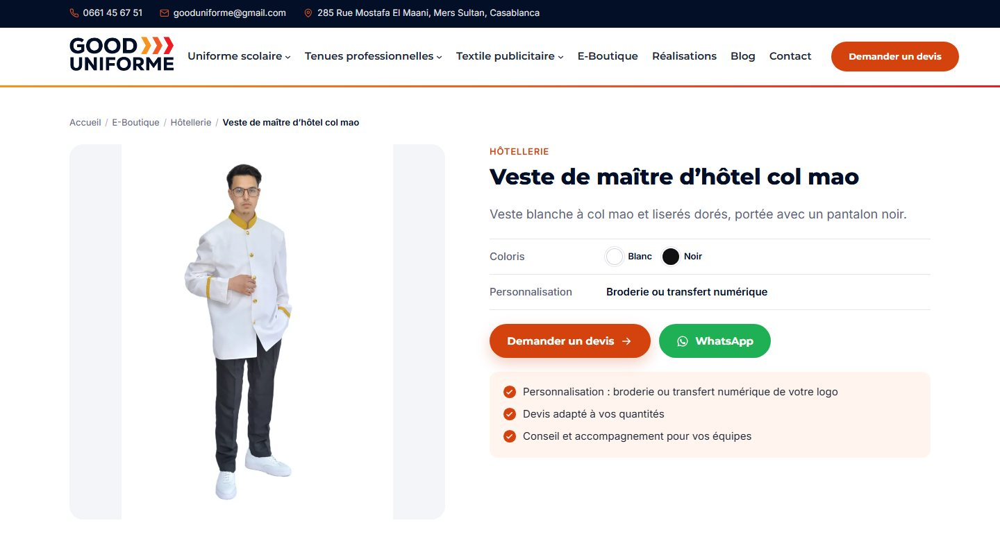
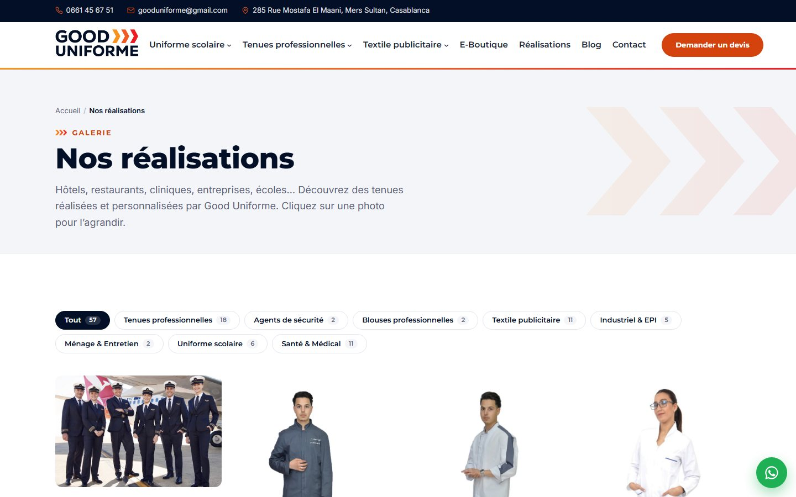

Conversion
Augmenter le nombre de demandes de devis.
Étude de cas · 2026
Refonte UX/UI et stratégie de référencement naturel pour Good Uniforme, spécialiste des vêtements professionnels personnalisés au Maroc.
Good Uniforme conçoit et personnalise des vêtements professionnels au Maroc : tenues de travail, blouses médicales, uniformes scolaires, textile publicitaire et équipements de protection. L'entreprise travaille avec des marques reconnues de la restauration, de l'hôtellerie et de l'agroalimentaire.
Son site est sa principale vitrine et son premier canal de demandes de devis. Il doit à la fois rassurer les entreprises et apparaître quand elles cherchent un fournisseur sur Google.
Comment permettre à une entreprise de trouver le bon vêtement, de le personnaliser et de demander un devis en quelques clics — tout en gagnant en visibilité sur Google ?
Augmenter le nombre de demandes de devis.
Trouver un produit par secteur ou par type en moins de 3 clics.
Se positionner sur les recherches clés : « vêtement de travail Maroc », « blouse médicale Casablanca »…
Un site rapide sur mobile, où se fait une grande partie des recherches.
Avant de dessiner quoi que ce soit, j'ai analysé le site actuel sous trois angles : l'expérience utilisateur, le contenu et le référencement.
La page d'accueil met longtemps à s'afficher et le contenu apparaît en fondu : sur une connexion lente, le visiteur voit d'abord une page vide.
La page « E-boutique » accessible depuis le menu n'affiche aucun produit : une impasse dans le parcours d'achat.
De nombreuses pages produits et secteurs, accessibles via des menus déroulants : difficile de savoir par où commencer.
Des pages existent pour des recherches précises (polo personnalisé, blouse médicale…) : une base solide pour le SEO.
Des logos de clients reconnus, à mettre davantage en valeur pour rassurer.
Le bouton est visible en haut de page mais le parcours de demande reste à clarifier (quelles infos fournir, quels délais).
Glisse le curseur pour comparer.


L'ancienne E-boutique n'affichait aucun produit. La nouvelle propose un catalogue filtrable par catégorie, une recherche, et un devis à chaque étape.




J'ai gardé les codes de la marque — le bleu nuit et les chevrons dégradés orange-rouge — pour ne pas perdre la reconnaissance acquise, en les appliquant de façon plus cohérente.
#0A1230#F7941D#F26522#ED1C24Aa
Vitesse de chargement, Core Web Vitals, images optimisées, balisage et sitemap.
Une page solide par produit et par secteur, avec titres, méta-descriptions et FAQ.
Fiche Google Business Profile optimisée pour Casablanca et le Maroc.
Liens depuis des annuaires professionnels et des partenaires.
| Requête visée | Page dédiée |
|---|---|
| vêtement de travail Maroc | /blouse-de-travail-maroc/ |
| blouse médicale Casablanca | /blouse-medicale-a-casablanca/ |
| polo personnalisé Maroc | /polo-personnalise-maroc/ |
| gilet personnalisé avec logo | /gilet-personnalise-avec-logo-maroc/ |
Les résultats seront mesurés après la mise en ligne de la nouvelle version : vitesse de chargement, nombre de demandes de devis et positions sur Google.
© Amine Socrate — Designé & codé avec soin.
⏳ Projet en cours — je publierai les chiffres ici dès la mise en ligne.